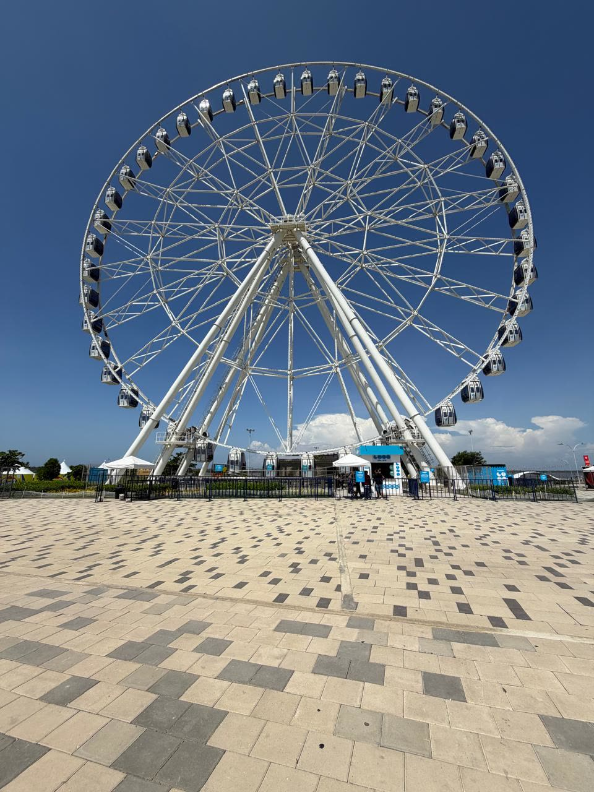
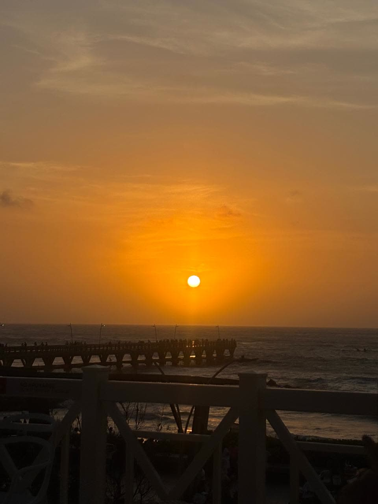
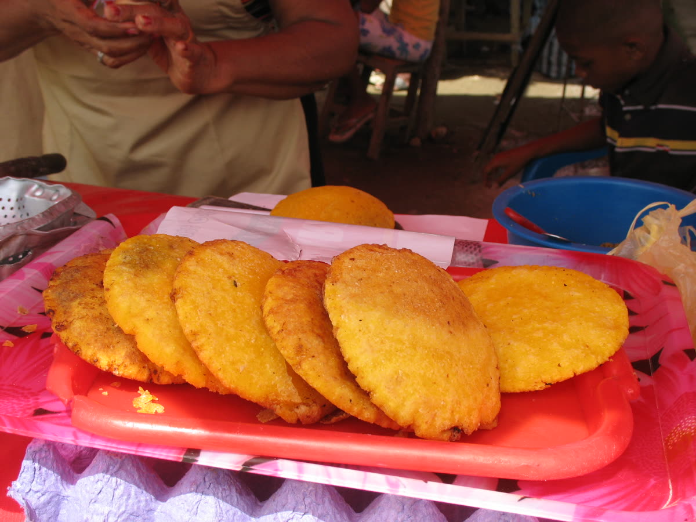
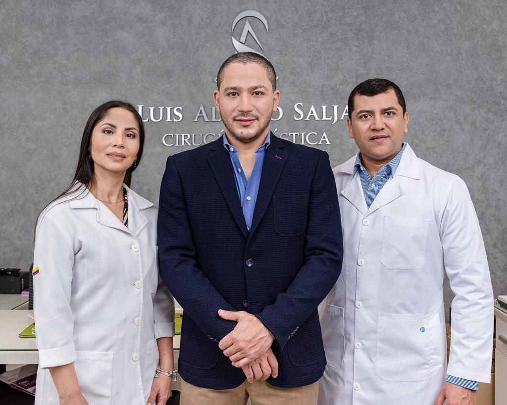
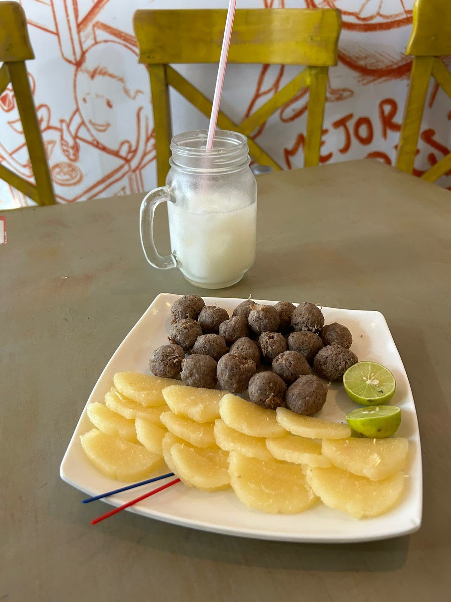
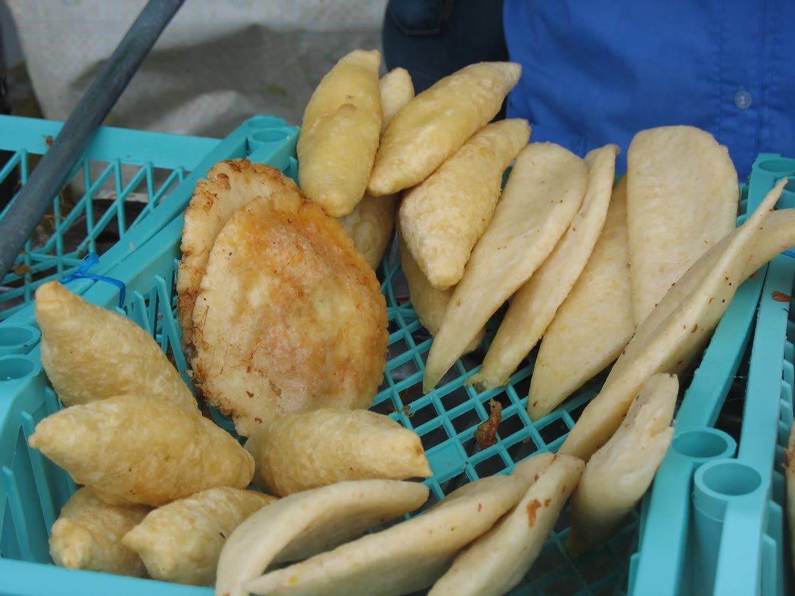
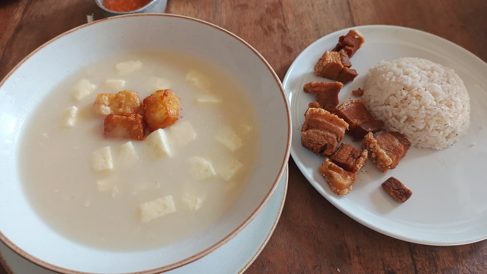
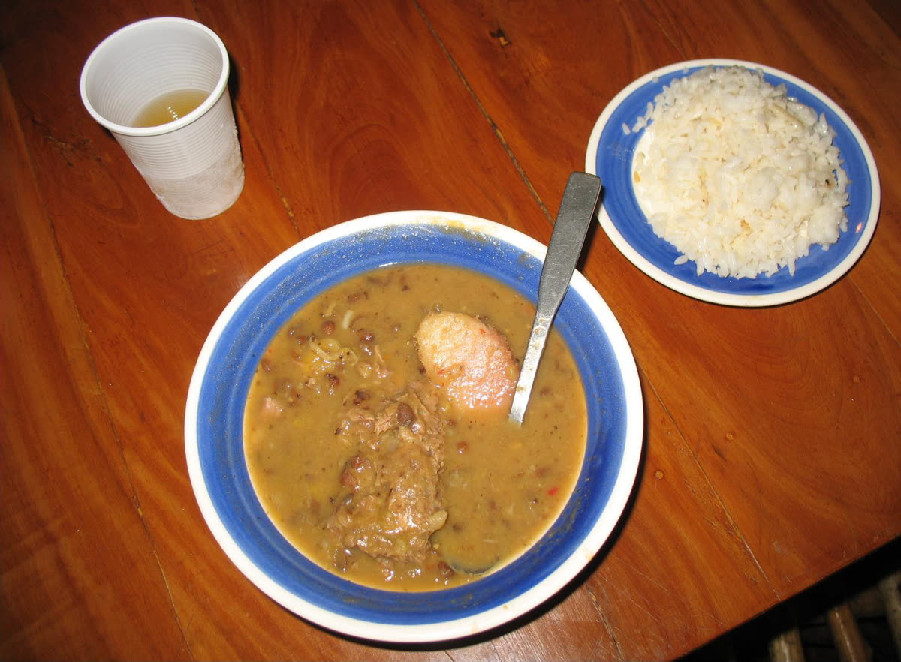

Tu transformación, en un destino que te cuida
Viaja con confianza para recibir atención quirúrgica de excelencia, combinando seguridad, resultados naturales y una experiencia diseñada para tu bienestar.
Agenda tu cita



Un destino que te recibe como en casa
Barranquilla es una ciudad vibrante, cálida y llena de vida. Su gente, su cultura y su clima te harán sentir acompañado durante toda tu experiencia.
Descubre Colombia mientras te transformas
Desde el mar Caribe hasta su gastronomía y cultura, Barranquilla ofrece todo lo que necesitas para una recuperación tranquila y una experiencia inolvidable.
Tu recuperación también sabe a Barranquilla




Siempre siguiendo las indicaciones médicas de tu dieta post operatoria.
Fotos de Barranquilla: Wikimedia Commons — «Noria Luna del Río» y comidas típicas por Jdvillalobos (CC BY-SA 4.0 / CC BY 3.0); «Atardecer en Muelle 1888» por Project5443 (CC0); «Mote de queso con chicharrón» por Futbolero (CC BY-SA 4.0).
De la idea a la realidad, paso a paso
Primera valoración
Conversamos sobre tus objetivos y definimos el plan ideal.
Coordinación de viaje
Gestionamos vuelos, hospedaje y traslados.
Día de tu cirugía
Clínica certificada con equipo quirúrgico especializado.
Recuperación
Atención 24/7 y tiempo para descansar.
Tu transformación en Colombia te espera
Las citas para cirugía son limitadas. Cuéntanos sobre ti y te contactaremos para diseñar tu plan quirúrgico personalizado, incluyendo viaje, estadía y recuperación.
- Valoración virtual antes de viajar
- Coordinación de vuelos, hospedaje y traslados
- Acompañamiento durante toda tu recuperación